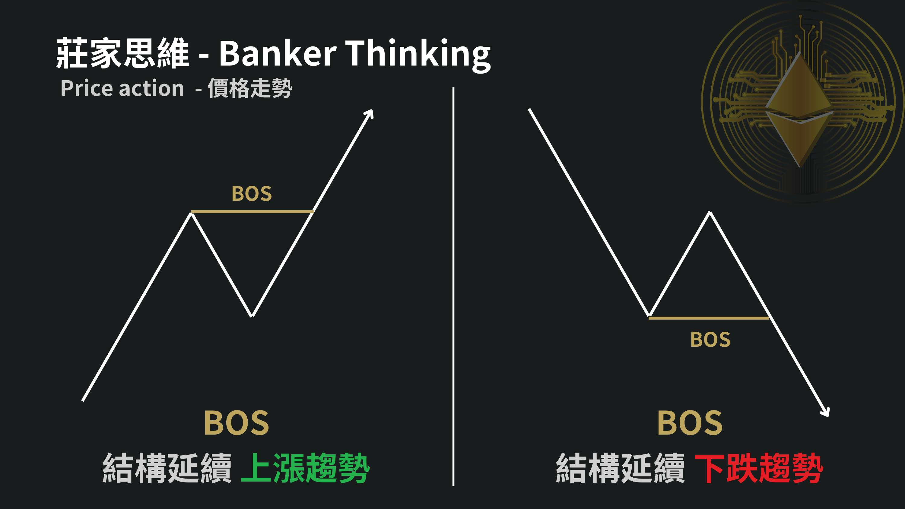
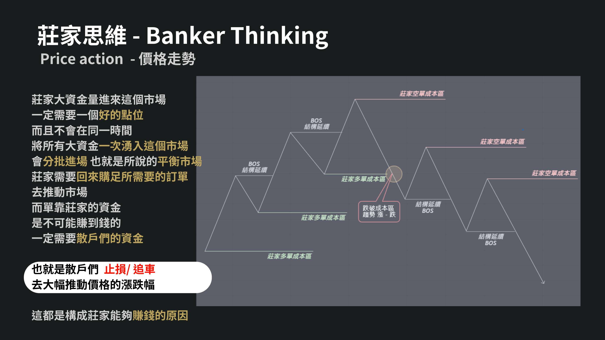
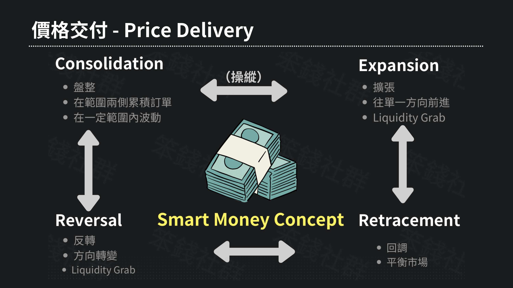
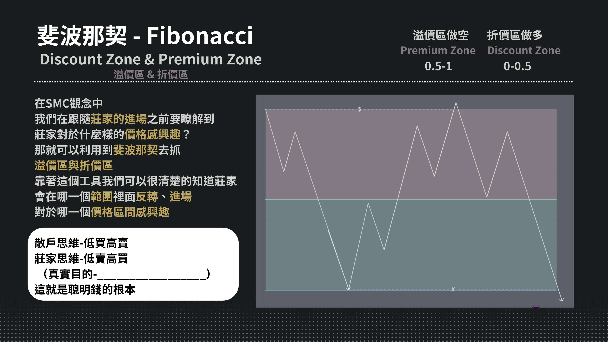

大行情
Risk On
美股 BOS 仍有效，台股與加密偏跟隨。
美股
SPY / QQQ
科技權值接近高位流動性，留意掃高後反應。
台股
加權 / 台積電
權值股決定結構延續，開高時避免直接追價。
加密
BTC / ETH / SOL
高 beta 市場，優先等掃單與 OB 回測。
大行情價格行為與結構標註
目前劇本：美股維持 BOS，台股跟隨但需觀察匯率與權值股流動性，加密偏向高 beta 延伸。Premium Zone：偏空觀察
Discount Zone：偏多觀察
BOS結構延續 MSS
結構反轉 OB
止損點位 Liquidity Grab
掃高點 Entry
回踩測試
結構狀態風險偏多美股主導，台股與加密跟隨
跨市場確認美股 + 台股先看美股期貨與台積電權重
進場區域0-0.5Discount Zone 優先找多
Setup Score784/6 條件成立
盤前 SMC 檢查
勾選後自動更新 setup 分數HTF
Structure
Liquidity
PD
OB
Target
Setup 67%可以觀察，尚未重倉
交易計畫
把講義概念變成執行欄位PDF 內容來源抽樣

BOS：結構延續
莊家成本區與掃單
價格交付與流動性
Premium / Discount